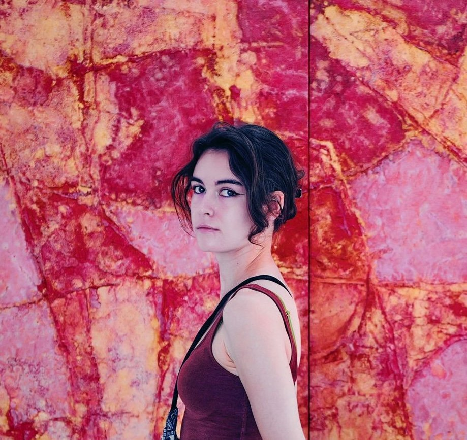

About me
I’m Patri, an Edinburgh based UX designer. I create experiences that put people first. Grounded in research, shaped by accessibility, and designed with people in mind.

I'm a self-taught designer and have learnt a lot of the processes, concepts and theories of UX/UI and product design through attending workshops, reading blogs and applying these to projects in my spare time and at work. I am very much a big-picture thinker and enjoy working on products end to end, from ideation all the way to development.
My journey so far
I studied Digital Animation at Universidad Camilo José Cela in Madrid, where I developed a strong foundation in visual storytelling and communication. During that time, I interned as a storyboard artist at Skydance before moving to Edinburgh mid-pandemic to complete a Master’s in Creative Advertising at Edinburgh Napier University while freelancing as an illustrator.
It was during my master’s that I discovered UX through industry meet-ups and people working in the field. I quickly realised how naturally my background in storytelling, design, and human behaviour connected with user experience design, which led me to pursue UX professionally.
-
Shelter Scotland
March 2024 – present
UX designer
- Led and contributed to UX research projects across Shelter Scotland’s housing advice platform, helpline, and supporter content, improving navigation, content discoverability, and support journeys for users in high-stress situations.
- Presented research findings and design recommendations to stakeholders, advocating for user needs while balancing organisational and service requirements.
- Collaborated closely with UX researchers to translate behavioural insights into actionable design, content, and service improvements.
- Developed evidence-based guidelines for Shelter Scotland’s advice team and contributed to the wider organisational design system.
- Contributed to the design and development of a scalable, responsive design system for the wider organisation.
- Collaborated with Shelter England’s digital team on homepage redesign work, contributing to research, competitor analysis, prototyping, and usability testing.
- Synthesised qualitative and quantitative research findings into recommendations supporting UX, content design, and service decision-making.
- Conducted mixed-method research including usability testing, A/B testing, first-click testing, card sorting, workshops, desktop research, and competitor analysis using Lyssna and Userlytics.
-
H&A Agency
August 2022 – May 2023
Junior UX designer
- Created and maintained accessible and intuitive content for a development company and a care home website.
- Conducted research and user testing, employing user flows and journey maps to identify pain points, and effectively iterated on digital products to meet users' needs.
- Redesigned a company’s search tool, significantly improving interaction and functional design, and reducing frustration and page abandonment.
- Proposed wireframes and implemented solutions based on user needs.
- Conducted branding competitor analysis, resulting in a better understanding of target audience needs.
-
Lumi Digital Agency
April – June 2022
Intern UX designer
- Validated products through sprints, workshops, and research.
- Proposed solutions and created visually compelling prototypes and content based on insights for a career advice platform.
- Utilized both qualitative and quantitative research to reach business goals and meet user needs.
- Presented research, ideas, and solutions directly to clients.
- Effectively collaborated with multidisciplinary teams and clients, contributing to the success of multiple web and mobile designs.